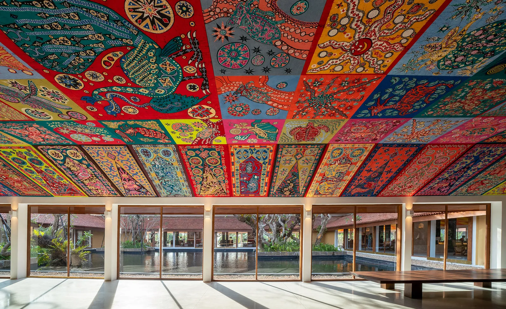
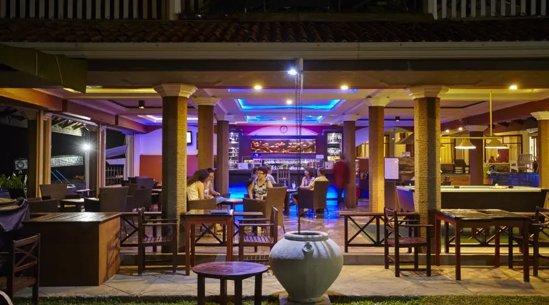
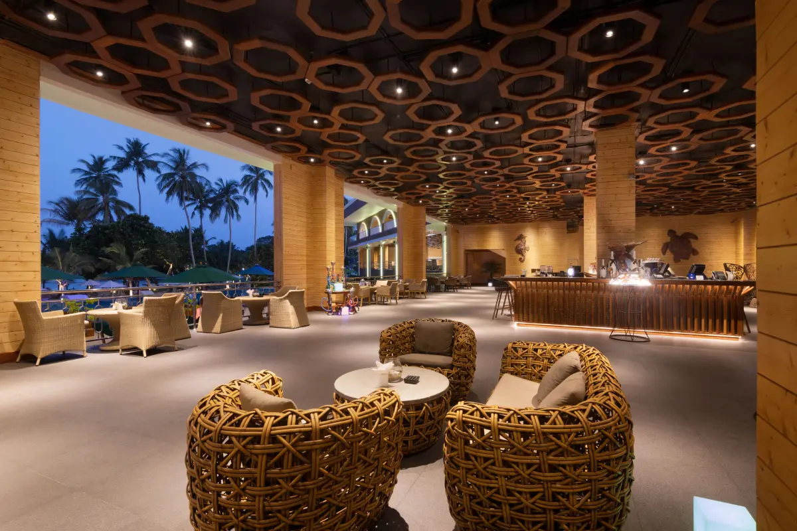

Bentota is a coastal town in Sri Lanka, located in the Galle District of the Southern Province. Bentota beach is ad worderful place to watch the sun set or just laze the warm water, great shallow beautiful beach to relax and to enjoy the sound of sea. Main attarctuion near are Kosgoda Turtle Hatchery and Breif Garden, Which are located near Bentota. There is a helipad named as Richy Skylark Helipada which operates helicopter joyrides, and operated by Skylark Aviation Helicopters.
DISTANCE:
Colombo to Bentota- 86.4km
(via Southern express E01 - 1h 44min)
Cinamon Bentota is the first Sri Lanka large-scale hotel to be awarded LEED Platinum.the resort offers variety of Accomadation option which are inspired by Geoffery Bawa, and different dinning expiriences. It is located 112km from the Airport
Hikkaduwa is a small town on the south coast of Sri Lanka located in the southern province, about 17 km north-west of Galle and 98 km south of Colomnbo. Hikkaduwa beach and night lif e make it a popular tourist destination. it is a well- known international destination for board surfing. it is reputed as the second best sporting spot in Sri Lanka. Hikkaduwa Coral Sanctuary located a few hundred meters offshore. It has approximately seventy vareities of colourful corals.
DISTANCE:
Colombo to Hikkaduwa- 12okm
(via Southern express E01 - 1h 55min)
Coral Sands offer facilities to several water acitivities like snorkelling, diving, turtle watching.Hostel also offer variety of accomadation option to select, bar, a private deck. it is the best place to have a vibrant and relaxing holiday in Hikkaduwa. it is located 135km form Airport
Unawtuna is a coastal town in Galle district of Sri Lanka and famous for its beautiful beach and corals. Whwere there was once a flawless crescent of golden sand that swept along a palm-lined shore with turquoise waters that had just enough surf to make for ideal swimming conditions, there is now one of the best appealing beach towns. The beautiful water is still there and you can still find decent patches of sand.
DISTANCE:
Colombo to Unawatuna- 129km
(via southern express E01 - 2h)
Araliya Beach is the best place have a relalaxing yet affordable vacation. It is the firs star-class and five- star hotel in Unawatuna. tThis property owned wide rande of accomdation options, bars, boutiques,and resturants .It is located 500m from Unawatuna
